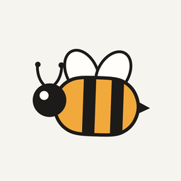

Instagram as it should bee.
Bee Social is a free iPhone app that hides Reels, ads and suggested posts from Instagram, so you can keep up with your friends without the endless scroll.
How it works
A filter for Safari
Bee Social gives Safari a list of things to hide on Instagram's website and a list of downloads to skip, like Reels videos.
An icon on your home screen
Setup takes about two minutes and walks you through every tap. Instagram then opens from your home screen like an app.
You choose what goes
Reels, the Reels button, ads, suggested posts and the Explore grid can each be switched on or off.
Your privacy
Bee Social can't see what you do on Instagram, never touches your login and collects nothing. Read the privacy policy.
Try the beta
Bee Social is being tested through Apple's TestFlight. The public link will be here soon.